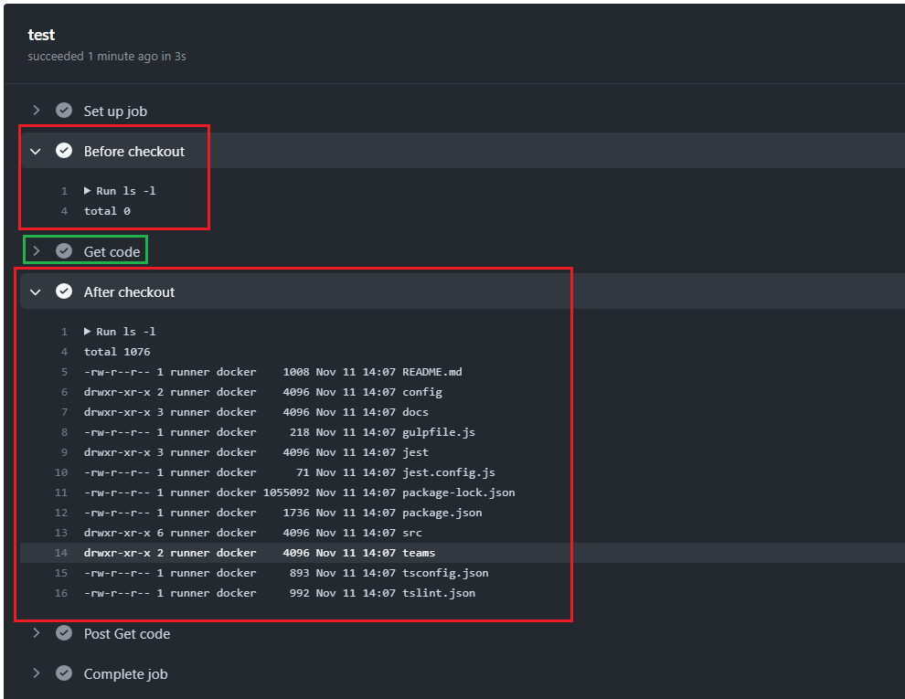

React SharePoint (SPFx) Forums Hooks
Video link: https://youtu.be/TKfQWAVdbOc
Git Repository: https://github.com/Ashot72/SPFx-Forums-Hook
Hooks are a new addition in React 16.8. They let you use state and other React features without writing a class. As a result, we do not need to learn
and understand specialized React features anymore; we can simply use our existing JavaScript knowledge in order to use Hooks.
React provides a few built-in-Hooks.
Let's go through the built-in hooks. We will go deeper when we explore our basic forums app.
useState Hook
Figure 1
useState Hook returns a stateful value (state) and a setter function (setState) in order to update the value.
The useState Hook is used to deal with state in React. The useState Hook replaces this.state and this.setState().
useEffect Hook
Figure 2
This Hook works similar to adding a function on componentDidMount and componentDidUpdate. Effect Hook allows for returning a
cleanup function from it, which works similarly to adding a function to componentWillUnmount. The useEffect Hook is used to deal with timers,
subscriptions, requests, and so on. The useEffect Hook replaces the componentDidMount, componentDidUpdate, and componentWillUnmount methods.
useContext Hook
Figure 3
This Hook accepts a context object and returns the current context value. The useContext Hook is used to deal with context in React.
The useContext Hook replaces context consumers.
useRef Hook
Figure 4
This Hook returns a mutable ref object, where the. current property is initialized to the passed argument (initialValue).
The useRef Hook is used to deal with references to elements and components on React. We can use set a reference by passing
the ref prop to an element or a component, as follows: <Component ref={refContainer} />
useReducer Hook
Figure 5
This Hook is an alternative to useState, and works similarly to the Redux library. The useReducer Hook Is used to deal with complex state logic.
useMemo Hook

Figure 6
Memorization is an optimization technique where the result of a function call is cached, and is then returned when the same input
occurs again. The useMemo Hook allows us to compute a value and memorize it. The useMemo Hook is useful for optimization when
we want to avoid re-executing expensive operations.
useCallback Hook

Figure 7
This Hook allows us to pass an inline function, and an array of dependencies, and will return a memorized version of the callback function.
The useCallback Hook is useful when passing callbacks to optimized child components. It works similarly to the useMemo Hook, but for
callback functions.
Figure 8
React Router DOM allows us to handle routes in a web app. In our forum we use HashRouter.
Figure 9
On posts page, after the hash (#) you see /posts/3/4 params.
Figure 10
The path matches /posts/:fid/:tid where fid is the forum Id and tid is topic Id and loads Posts component.

Figure 11
React Suspense allows us to let components wait before rendering. At the moment, React Suspense only allows us to dynamically load components
with React.lazy. In the future, Suspense will support other cases, such as data fetching.
React.lazy is another form of performance optimization. It lets us load a component dynamically in order to reduce the bundle size.
Sometimes we want to avoid loading all of the components during the initial render, and only request certain components when they are needed.

Figure 12
When you load the Forums (first) page, you will see waiting icon and Loading…

Figure 13
While Forums component is loading React.Suspense will show the loading icon and loading message we specified in fallback property.
Figure 14
In the network tab you will notice JavaScript chunks after forums (first) page has been loaded. These chunks load only forums code not topics or posts
as we defined it via const Forums = React.lazy(() => import('./Forums/ForumsView')) (Figure 11).

Figure 15
When you navigate from forums page to topics one first time you will see React Suspense in action and we are loading topics chunks this time.

Figure 16
The chunks are loaded. Once you navigate to posts page you will see posts chunks loaded in a similar way. If you navigate form forums page to
topics page or back to forums or posts page no chunks will be loaded as they have already been loaded.

Figure 17
We will talk about AppStateProvider and WebPartContextProvder a little bit later.
React context (useContext Hook) provides a solution to passing down props over multiple levels of components, by allowing share values between components,
without having to explicitly pass them down via props. React context is perfect for sharing values across the whole application.
We have used React context in many places in our app. I would like to show a React context case in the app which is easier to grasp.
Figure 18
When we add a topic or update it, we specify an expiration date. In general, it would be much better to specify a calendar component instead of these 3 drop downs but I
chose them on purpose to show how React context can be used.

Figure 19
In TopicForm.tsx component you can see that we have DateFields component which has DayField, MonthField and YearField components as children. When a day, month or year
is selected as an option (Figure 18) then onChange event is fired passing the selected date to handleCustom method.

Figure 20
In DateFields.tsx we import the context from react and specify our const Context with date object and onChange event. In Context.Provider
we pass context (IDateFieldProp interface) as a value and also children (DayField, MonthField and YearField are children of DateFields component).
Every Context object comes with a Provider React component (Context.Provider) that allows consuming components to subscribe to context changes.
The Provider component accepts a value prop to be passed to consuming components that are descendants of this Provider. One Provider can be
connected to many consumers. All consumers that are descendants of a Provider will re-render whenever the Provider's prop changes.

Figure 21
In DayField component which is a child of DateFields component we consume the context which provides us date object and onChange event. Note, we do not pass them as props
we obtain them via the context. DayField component is the first dropdown in topic's expiration date (Figure 18). When a day is selected in the first option then onChange event is fired
with the selected date and passed to handleCustom method (Figure 19).

Figure 22
MonthField and YearField work similarly.
I would like to show useReducer Hooks in action then after it we will explore the forums app from scratch. The useReducer Hook is an advanced version of the useState Hook.
It accepts a reducer as the first argument, which is a function with two arguments: state and action. The reducer function then returns the updated state computed from the
current state and the action. If a reducer returns the same value as the previous state, React will not re-render components or trigger effects.
Figure 23
We should use useReducer Hook instead of the useState Hook when dealing complex state changes. It is easier to deal with global state
because we can simply pass down the dispatch function instead of multiple setter functions.

Figure 24
In PostView.tsx component we import postsReducer. In useReducer we pass initialState as an empty array [] (Initially no posts). Once we obtain posts from
a SharePoint list we dispatch 'LOAD_POSTS' action.

Figure 25
This is postReduser.ts. When the action type is 'LOAD_POSTS' we just append coming posts to the current ones.

Figure 26
We navigate to Posts page and fetch posts data. Posts data are pushed to state.

Figure 27
After we click Load More button, we append new posts to the existing ones (Figure 25). Once we have posts in the state, we can use it in the app.
You should notice that we imported postReducer in PostsView.tsx file and used it in that component. In other
words it is local to the component but there are cases when we want to use reducers globally throughout the app. Let's find out how to do it.

Figure 28
In ForumsHooks.tsx file where we specified Routing the parent component is AppStateProvider.

Figure 29
If you closely look at AppContext.tsx file everything should be clear to you, I hope. We specify our context and pass a reducer as value and pass children as well.
Recall our DateFields component (Figure 19, Figure 20). We also specify useContext in this file to import.

Figure 30
As AppStateProvider is the uppermost component and we pass children in our context then our reducer (state and dispatch) can be used throughout the app.
We globally shared our reducer.

Figure 31
We also defined another provider which is WebPartContextProvider.

Figure 32
Here we pass SharePoint Webpart Context as a value.

Figure 33
Context is passed from ForumsHookWebPart.ts.
Figure 34
This means we can use multiple providers which can be used globally. It is not required for them the be always uppermost ones. They can be nested at any level
and effect on children embedded by them.

Figure 35
Instead of these 2 providers we could have just one provider AppStateProvider and also pass SharePoint Webpart context there. We use multiple
contexts for values that are not usually consumed together. Consumer components that consume one value can re-render independently of those
that consume another value. In our app almost all components use reducers specified in AppStateProvider and only two components use WebPartContextProvider
so, we defined multiple providers.

Figure 36
In reducers.ts file we globally shared reducers, we specify both forums and topics reducers. We specified three reducers in our app. Forums and Topics reducers (reducers.ts)
are shared globally meaning they can be used throughout the app and Posts reducer (postReducer.ts, Figure 25) can only be used in posts related components.
Besides, Redact's Built-in hooks we can also create our custom hooks.
Custom hook allows you to extract some components logic into a reusable function. A custom hook is a JavaScript function that starts with use and that call can
other hooks. Components and hooks are functions, so we are really not creating any new concepts here. We are just refactoring our code into another function
to make it reusable.
There is a convention that Hook functions should always be prefixed with use, followed by the Hook name starting with a capital letter; for example:
useState, useEffect, and useReduce. This is important, because otherwise we would not know which JavaScript functions are Hooks, and which are not.

Figure 37
Here is a simple one. We created a custom hook that starts with use.
Figure 38
Obtaining the context from WebPartContext.

Figure 39
Using the hook in some components.
Figure 40
Here is another one. We get current user from the web. We will come to useEffect hook soon.

Figure 41
With the help of useCurrentUser hook we find out if current user is a site admin or not.

Figure 42
We get our globally shared dispatch function.
Figure 43
Used in the app.
Figure 44
It is the globally shared forums state.
Figure 45
We retrieve forums state from the hook.
The useEffect Hook accepts a function that contains code with side effects, such as timers and subscriptions.
Figure 46
The function passed to the Hook will run after the render is done and the component is on the screen.

Figure 47
A cleanup function can be returned from the Hook, which will be called when the component unmounts and is used to, for example,
clean up timers or subscriptions.
Figure 48
To avoid triggering the on every re-render, we can specify an array of values as the second argument to the Hook.
Only when any of these values change, the effect will get triggered again. The array passed as the second argument is called the
dependency array of the effect. If you want the effect to only trigger during mounting, and cleanup function during unmounting, we can pass
an empty array as the second argument.

Figure 49
In this useEffect Hook we can say, whenever anything in the array (the green rectangle) changes I want to go and run some code; something else needs to happen as well.
The word Effect comes from the word side effect. In our case whenever newPosts changes we set new posts count (setNewPostsCount).
There are lots of other things that your app needs to do besides just setting some value.
Figure 50
For example, when a piece of data changes you need to do a fetch or you want to save some info to a local storage. You may want to play a sound or adjust the scroll position.

Figure 51
If you do not provide a dependency array React is just always going to run the side effect on every single render.

Figure 52
What if we put an empty array? React is going to run the side effect on the very first render, just once.

Figure 53
In our useCurrentUser.ts side effect we use an empty array, we run useEffect once to get current user.
Let's see what eslint-plugin-react-hooks plugin does before going on with useEffect.
You can install it via npm install --save-dev eslint-plugin-react-hooks
Figure 54
It enforces these two rules.
SharePoint SPFX does not support eslint yet, it supports tslint.
Figure 55
For that reason, I installed tslint-react-hooks.

Figure 56
I added up the rule to the project's tslint.json.
Figure 57
If I put a hook inside the condition, I will get the warning A hook cannot appear inside an if statement.
Figure 58
There are some rules that you should be aware of when dealing with hooks and the plugin really helps us to avoid some errors.
Unfortunately. tslint-react-hooks plugin does not warn us against exhaustive-deps (Figure 54) that eslint does.
We are going to see what exhaustive-deps mean.

Figure 59
We already discussed this hook. Let's change it.
Figure 60
Let's pass an empty array this case. When you run it with eslint you will get a warning. Eslint see that you use newPosts inside the useEffect but it was not
in the array. If you need that information (newPosts) and you do not have it in the array then it is not going to re-run the effect (am empty dependency array, just very first render)
when newPosts changes and the UI is going to be out of sync. exhaustive-deps warning is really helpful when you are dealing with useEffect.
All variables subject to change that you use in your useEffect function should be included within the useEffect dependency array.

Figure 61
By the way, you can have several useEffect and the order matters. They will be executed in the same order as they are defined inside the component.

Figure 62
You should also include functions when using inside useEffect.
Figure 63
The dispatch function is stable and will not change on re-renders, so it is safe to omit it from useEffect or the useCallback dependencies.
When you define dispatch globally eslint complains about it so we added it to the array.

Figure 64
You see that in useEffect we used setUser function from React useState built-in hook but did not define it in dependency array.
You do not need to include the setter function setState in your dependency array because React guarantees that it will not change.
Figure 65
Note, that you cannot call useEffect with async as your side effect should always be synchronous. You should either use Immediately Invoked Function Expression like
we did or define a function with async inside useEffect and call that function from useEffect.

Figure 66
Suppose, we have Posts React class component where a user can subscribe to posts in componentDidMount() and unsubscribe form posts and subscribe
in componentDidUpdate() when uid prop is changed and unsubscribe in componentWillUnmount().

Figure 67
We can do the same thing with use useEffect.
We already stated: A cleanup function can be returned from the Hook, which will be called when the component unmounts and is used to, for example,
clean up timers or subscriptions. In our case in return unsub, we unsubscribe from posts.

Figure 68
We can replace useEffect code just with a single line of code. Our one-line useEffect is doing the exact same thing as Posts React class component.
With Hooks you have 90% cleaner code.

Figure 69
When you run Forums Hooks web part for the first time it generates three SharePoint lists.

Figure 70
They are FH_Forums, FH_Topics and FH_Posts.

Figure 71
ForumsView function will be invoked as soon as the web part is loaded. which is specified in our router (Figure 11). You can see that we specified our custom useListService hook
which is basically doing CRUD operation on a SharePoint list. In this component we are getting forums from FH_Forums list. We get forums, also an error if it occurs and loading
telling us if our async data retrieval is in progress or not.

Figure 72
We pass title param to the service, which is the list title such as FH_Forums and cached param. If cached is true then we obtain the cached version of data by not sending a
request to the server. We also specify 3 useStates hooks for data, error and loading.

Figure 73
uselistsService custom hook returns data, loading and error props and some functions which can be called from our components.

Figure 74
Once we defined our service, we call getListItems to retrieve forums from the list.

Figure 75
In getListItems we either retrieve forums from the list or from the cache depending on cache value (Figure 72).

Figure 76
We make use of useCallback React built-in hook.
Let's remove useCallback to see what this hook is used for.

Figure 77
In ForumsView we call getListItems.

Figure 78
getListItems hits and data are retrieved from the list.

Figure 79
Returning data from the useListsService.

Figure 80
ForumsView function is recreated, getListItems is called again and we are in an endless loop. With useCallback we pass an array of dependencies
which is in our case is [cahed] (Figure 76) and return a memorized version of the callback function. So, ForumsView will get the memorized version
of getListItems unless cached dependency is changes (e.g., from false to true). In our case cached is not changing when loading forums
and getListItems is memorized.

Figure 81
In ForumsView component as we already discussed, we could get forums and add it to forums reducer.

Figure 82
On the same control we have Forums child component to render forums but in that component but we do not pass forums data.

Figure 83
In Forums component we can get forums data via useForumsState custom hook (Figure 44) as we have a globally shared reducer.

Figure 84
This is not the case with PostsView as posts reducer is not globally shared and we have to pass the state to Posts child component to render it.

Figure 85
When we are on topics page, we render the forum name on the navigation which is in our case is Office 365.

Figure 86
One of the ways to get the forum name is via globally shared reducer. We have forums loaded in forums reducer and have forumId coming from URL (fid). We can find the forum
and get the forum name. The problem is that when the user refreshes the browser while he is on topics page then all forums data from forums reducer are gone. That is the case
that we retrieve the forum information via our useListsService custom hook's getListItem function. Note, we can have many instances of useListsService hook.

Figure 87
When you navigate from forums page to topics page you will see waiting loading indicator and after that topics are loaded.
When you go from topics page back to forums page via navigation, by clicking Forums link we do not want to retrieve forums from the server but from useListsService cache.

Figure 88
Link from react-router-dom allows us to specify state property. When you click a navigation coming from topics page back to forums page state property is there.

Figure 89
We obtain state parameter and pass it down to our customListsService as a second parameter.

Figure 90
useListService cached argument is true in this case (navigation state is true) and the forums are loaded from cache. Forums are in the cache because we navigated
to topics page from forums page and forums were already loaded and are in the cache.

Figure 91
What if a user navigates from forums page to topics, refreshes the browser while he is on topics page then clicks Forums link on the navigation and comes to forums page?
In this case though cached value is true as we navigated from topics page to forums page but the cache object is empty as we refreshed the page.
This time forums will be loaded from the server despite the fact that cached value is true and you will see Wait loading indicator as data are retrieved from the server.

Figure 92
You can add, update or delete a forum topic or a post using forms.

Figure 93
In TopicsForm component where topic's form controls are declared we pass formState object.

Figure 94
These are topics controls.

Figure 95
In TopicsView component we pass data to our useFormData hook then to useFormState hook.

Figure 96
When the topic panel is closed (this custom hook is also used in forums and topics components) we set data and return it.

Figure 97
This is the shared form state which we us in our components. For text field and text area controls we call handleChange function, for checkboxes handleChecked and we can also
call handleCustom by passing key and value pair (Figure 94).

Figure 98
You can undo or redo a post content.

Figure 99
For the we use our custom useDebouncedUndo hook which makes use of two third-party hooks; use-undo and use-debounce.

Figure 100
You can read about use-undo-hook hook in this URL.

Figure 101
This is the URL of use-debounce hook.
With the help of these two hooks, we implemented debounced undo/redo.